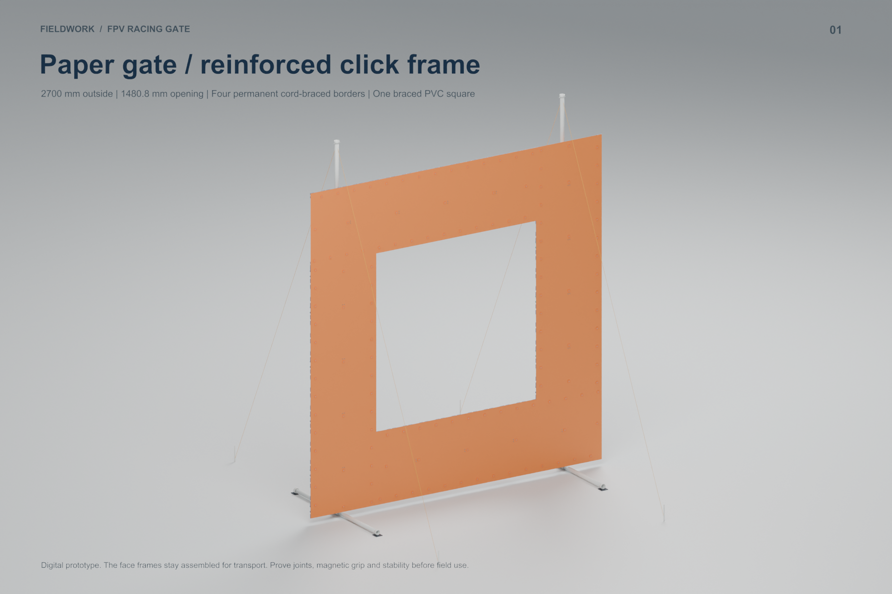
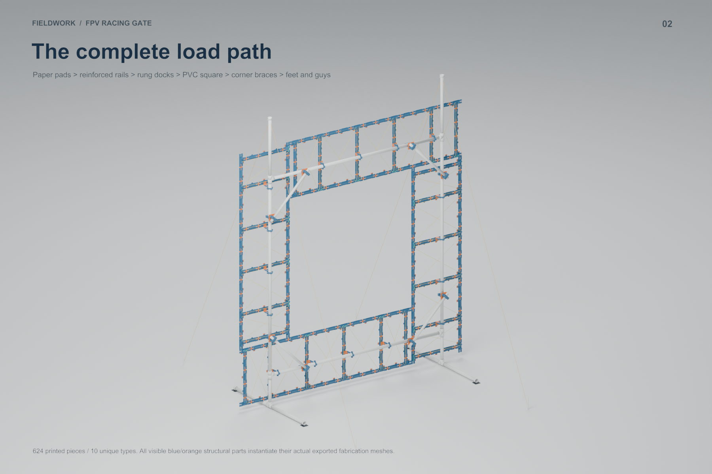
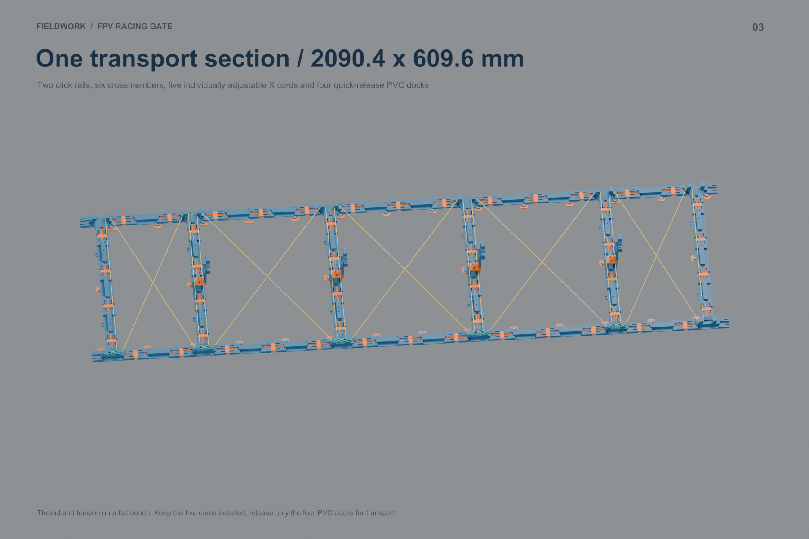
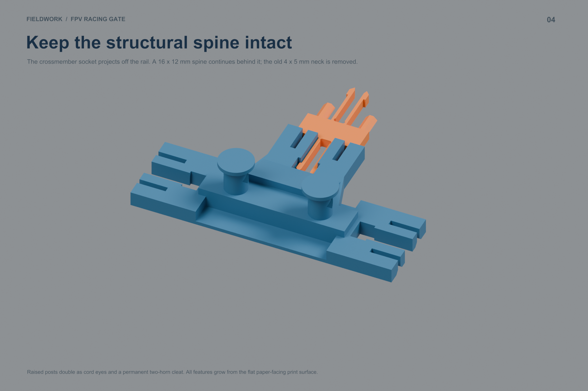
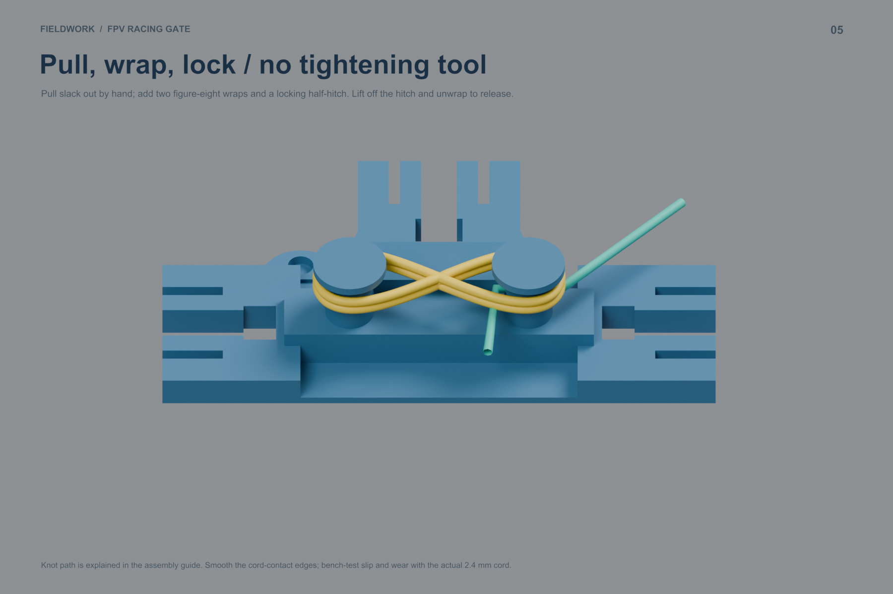
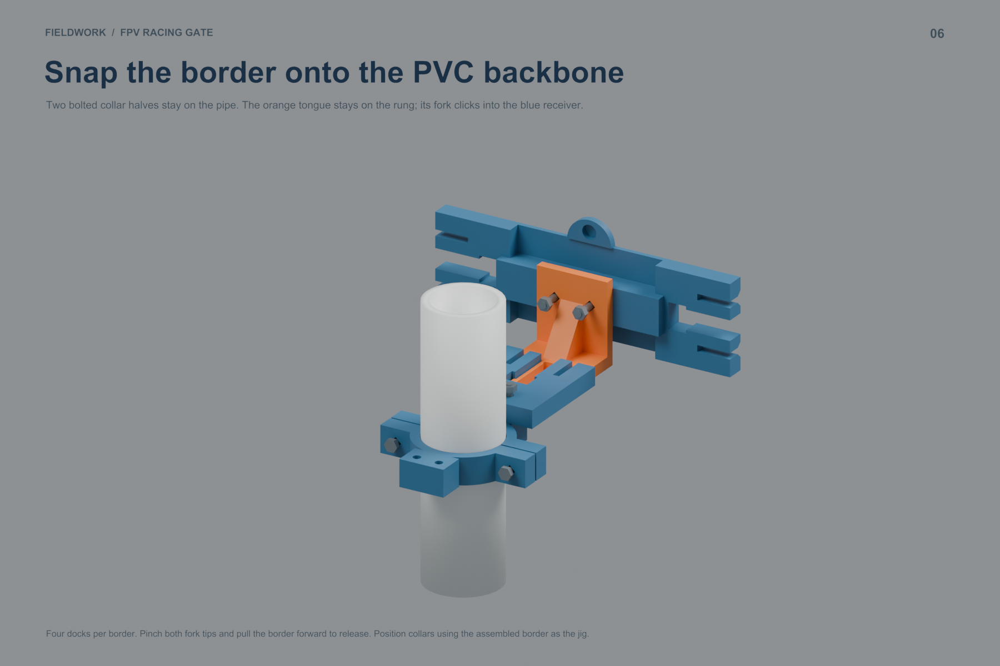
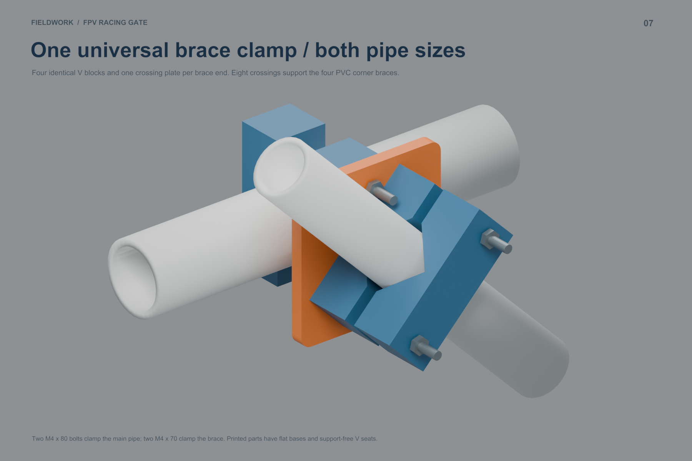
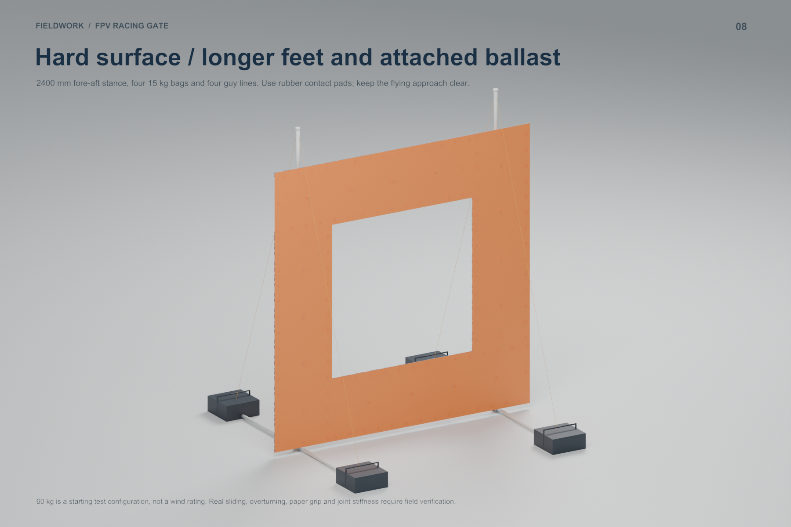
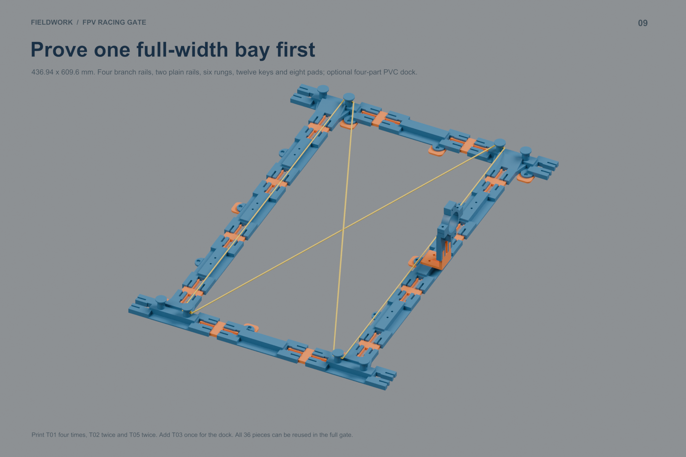

Four 24-inch-wide paper borders snap to one braced PVC square. The revised side socket leaves a continuous structural spine. Each X bay has a built-in cleat for tool-free adjustment.
Print T01_BRANCH once to check the stronger receiver and integrated cleat. For the full 609.6 mm-wide braced bay, print T01 four times, T02_RUNG twice and T05_SINGLE_PLAIN twice. Add T03_PVC_DOCK once to test attachment. The 36-piece bay plus dock is 426.7 g and 18.79 hours; its parts can be reused.
Cord choice: 2.4 mm 275 paracord. Twenty uniform 3.3 m face cords plus four 4 m guys use 82 m. Three 100-ft hanks cover the gate. Pull slack through each bay, make two figure-eight cleat wraps, finish with a locking half-hitch. Leave threaded for transport.









Printed BOM · Hardware · PVC cuts · Queue recipes · All 112 runs · Validation
| Prepared A1 Mini PETG plate | Runs | g/run | min/run |
|---|---|---|---|
| Q_EDGE_PLAIN_FULL | 21 | 73.2 | 170 |
| Q_EDGE_PLAIN_TAIL | 1 | 24.5 | 62 |
| Q_EDGE_BRANCH_FULL | 24 | 73.4 | 180 |
| Q_RUNG_FULL | 24 | 73.4 | 175 |
| Q_CLICK_KEY_FULL | 25 | 26.9 | 86 |
| Q_PAPER_PAD_FULL | 3 | 53.6 | 140 |
| Q_PAPER_PAD_TAIL | 1 | 41.7 | 110 |
| Q_PVC_HALF_33_FULL | 3 | 72.3 | 200 |
| Q_PVC_HALF_33_TAIL | 1 | 14.5 | 46 |
| Q_DOCK_SOCKET_FULL | 1 | 106.7 | 256 |
| Q_DOCK_SOCKET_TAIL | 1 | 35.6 | 90 |
| Q_DOCK_TONGUE_FULL | 1 | 101.8 | 278 |
| Q_DOCK_TONGUE_TAIL | 1 | 34.0 | 100 |
| Q_V_BLOCK_FULL | 2 | 194.4 | 441 |
| Q_V_BLOCK_TAIL | 1 | 129.6 | 297 |
| Q_CROSS_PLATE_FULL | 2 | 70.8 | 155 |
0.4 mm nozzle, 0.2 mm layers, 4 walls, 20% infill, supports off. Purchased PVC fittings are schematic envelopes; measure actual engagement before cutting. Verify snap life, cord grip, magnet retention and field stability using the guide. No printer job was sent.